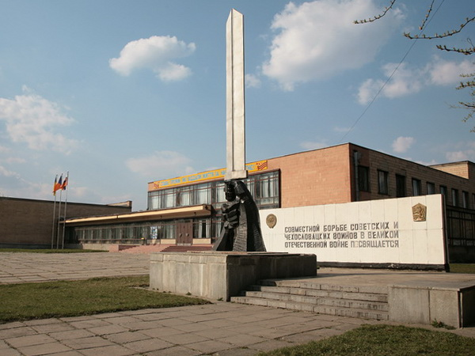
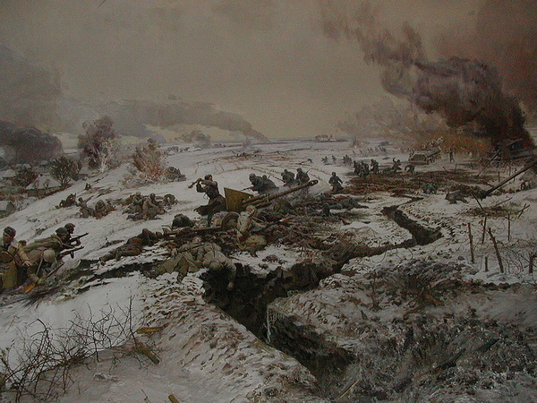

Экскурсия "Братство по оружию"
|
Программа тура Выезд из Харькова в 08.00. Соколовский музей боевого братства открыт на месте, где в 1943 г. во время Великой Отечественной войны впервые вступили в бой против немецко-фашистских войск чехословацкие добровольцы 1-го отдельного чехословацкого батальона под командованием полковника Людвика Свободы. Центральное место в экспозиции музея занимает диорама "Бой 8 марта 1943 г. в с. Соколово", также представлены документы, личные вещи, обмундирование чехословацких воинов, образцы боевой техники. Отдельно выставлены подарки и сувениры иностранных гостей. На территории музея мы также посетим Парк Дружбы, братские могилы солдат, гранитный обелиск, 14-метровый монумент "Братство по оружию". В Тарановке - Мемориальный комплекс Гвардейцев-Широнинцев. Музей посвящен подвигу 25 гвардейцев–широнинцев, которые ценою жизни задержали наступление немецких танковых войск 5 марта 1943г. Еще один экскурсионный объект - Спасов Скит (Часовня Нерукотворного Спаса) в с.Борки - место чудесного спасения семьи российского императора Александра ІІІ во время крушения поезда 17 октября 1888 г. Возвращение в Харьков около 16-17.00. |
  |
|
|
Переход на главную Ознакомиться с ценами можно здесь Вернуться к списку экскурсий |